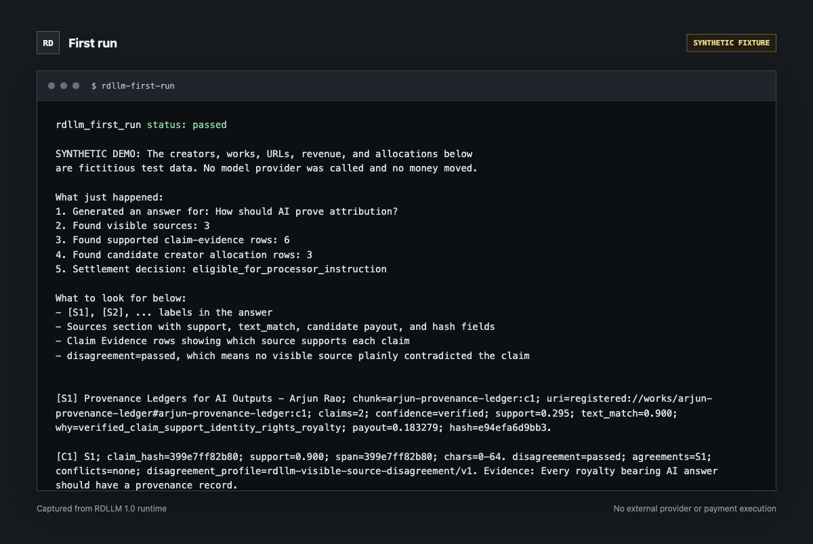

Royalty Driven LLM
Source-grounded AI answers with claim-level evidence, visible creator allocation, and settlement controls that fail closed.
Production-stable software, externally attested deployments. RDLLM 1.0 is a stable library and service boundary. A real operator cannot claim production readiness or execute direct settlement until independently signed deployment and payment evidence verifies.
Try It In Five Minutes
python -m pip install .
rdllm-first-runRuntime Example
The bundled example is intentionally synthetic and labels itself as such. It demonstrates the response shape without implying that a provider was called or money moved.

Choose Your Depth
Trust Boundary
RDLLM proves observable runtime facts: which sources were supplied, cited, matched, displayed, allocated, escrowed, and signed. It does not infer hidden training-data use from a citation. Post-hoc similarity is review evidence only. Public receipts use Ed25519; bundled HMAC artifacts are labelled fixtures.
Open the discovery manifest or see how RDLLM itself attributes papers, standards, code, and contributors.